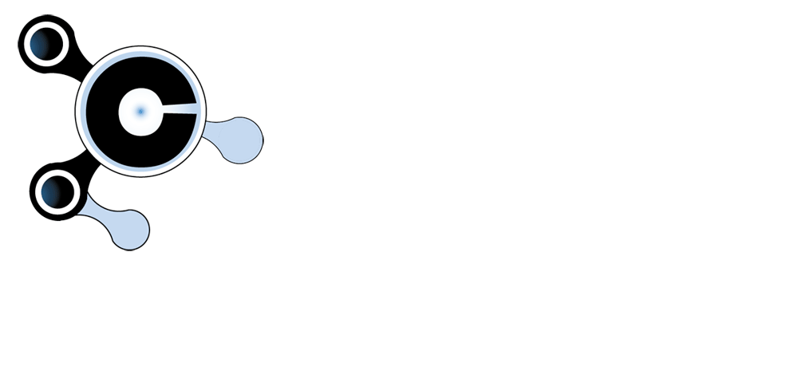

JGComunicaciones
Servicios IT
Inicio
Nosotros
Mis servicios
Marcas
Contacto

Folletos de Producto
Panasonic
KX-VC300 ( Video-conferencia )
Teldat
Elmeg hybird 130 ( Sistema Telefónico IP )
Jusan
Call Xpress ( Tarificador telefónico WEB )
Plantronic
Cascos Savi 700 Series
Siemens
Central Hipath 3000